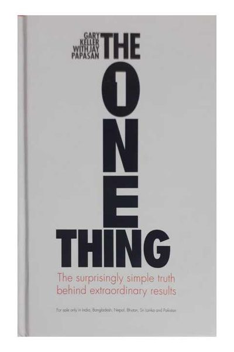

Library › Productivity
The ONE Thing — Summary & Key Lessons

The surprisingly simple truth behind extraordinary results — go small to go big.
📖 OPEN THE FULL INTERACTIVE BREAKDOWN →🌐 Read it in Hindi, Hinglish, Gujarati, Tamil & 22 more languages — free, with audio.
💡 The Big Idea
Extraordinary results come from narrowing your focus, not widening your effort. Keller's focusing question — 'What's the ONE Thing I can do such that by doing it everything else will be easier or unnecessary?' — is a machine for finding the lead domino. Knock over a 5cm domino and it can topple one 50% larger; line them up and the 57th domino could reach the moon. Success works the same way: geometric, sequential, one right thing at a time. The enemies are the lies we believe (everything matters equally, multitasking works, willpower is always available, big is bad) and the thieves we tolerate (inability to say no, fear of chaos, poor health habits, environments that don't support your goals). The method: time-block your ONE thing every morning — 4 hours if you're serious — and treat that block as the appointment that cannot be moved, because it's the appointment with your future.
🧠 The 6 Key Lessons
Lesson 1: The Focusing Question: Find the Lead Domino
Part 2: The Focusing Question
Most to-do lists are survival lists — everything gets equal billing, so the trivial eats the vital. The focusing question forces priority into a hierarchy: 'What's the ONE Thing I can do / such that by doing it / everything else will be easier or unnecessary?' Each phrase matters: CAN DO (an action, not a wish), SUCH THAT (it must knock over other dominoes), EASIER OR UNNECESSARY (leverage — the answer should delete future work). Ask it big (my ONE thing this year?) and small (my ONE thing today?), for every area — work, health, relationships, money. The magic is what the question refuses to allow: ten priorities. The word priority entered English in the 1400s as singular — and stayed singular for 500 years. Making it plural didn't change reality; it just let us feel busy while avoiding the one uncomfortable thing that actually matters.
📖 Example: Keller's own company: when Keller Williams stalled, he asked the focusing question and concluded the ONE thing was recruiting talented people — not marketing, not tech, not new offices. He spent essentially all his time on it, and the company became the… Read the full example →
⚡ Do this: Tonight, write tomorrow's ONE thing using the exact question — one sentence, one action. Do it FIRST tomorrow, before email, before meetings. Repeat for 7 days and notice what happens to the 'urgent' things you ignored (most quietly die).
Lesson 2: Time Blocking: Your ONE Thing Gets the First 4 Hours
Part 3: Productivity
Knowing your ONE thing without protecting time for it is spiritual entertainment. Keller's prescription is brutal: block FOUR HOURS every morning for your ONE thing — early, before the world wakes up and starts making claims on you. Treat the block like a flight you cannot miss: meetings move around it, requests bounce off it, and 'quick questions' wait. Then time-block your planning (one hour weekly to review goals) and your time off FIRST — rest is a productivity input, not a reward. The deep logic: results don't come from time spent, they come from focused time on the highest-leverage task, and mornings are when willpower — a depletable battery, not a character trait — is fullest. Everyone who says 'I don't have 4 hours' has 4 hours; they're just currently allocated to other people's priorities.
📖 Example: Paul Graham's maker vs manager schedule makes the same discovery from the startup world: one meeting dropped into the middle of a morning destroys the whole morning, because deep work needs uninterrupted runway. Keller cites prolific authors — Stephen King… Read the full example →
⚡ Do this: Open your calendar now and block 9 AM–1 PM (or your equivalent) for your ONE thing, recurring, for the next 2 weeks. Tell colleagues/family it's non-negotiable. When something tries to invade — and it will within 48 hours — practice the sentence: 'I can do it after 1.'
Lesson 3: The Four Thieves of Productivity
Part 3: The Four Thieves
Four thieves steal extraordinary results. (1) THE INABILITY TO SAY NO: every yes is a thousand nos in disguise — when you say yes to something, ask what you're saying no to; protect your ONE thing by making 'no' your default and yes the exception (Keller: 'a request must be connected to my ONE thing for me to consider it'). (2) FEAR OF CHAOS: focusing on one thing means other things pile up — accept the mess; the pile is the PRICE of extraordinary, not evidence of failure. (3) POOR HEALTH HABITS: energy is the substrate of focus — sleep, food, movement aren't separate from productivity, they're its fuel line; burnout steals more hours than it borrowed. (4) ENVIRONMENT THAT DOESN'T SUPPORT YOUR GOALS: the people around you and the physical space around you either feed your ONE thing or feed on it — willpower can't out-fight a phone on the desk and a pessimist in the next chair every single day.
📖 Example: Steve Jobs' famous claim that he was as proud of what Apple DIDN'T do as what it did: returning in 1997, he cut 340 products to 10 — saying no to 330 good ideas so four great ones could get everything. Warren Buffett's version: 'The difference between… Read the full example →
⚡ Do this: Identify which thief robs you most (be honest). This week install one structural defense: an email auto-reply with response windows, a phone-in-another-room rule for your time block, a 10 PM sleep alarm, or one 'no' to a recurring commitment that isn't connected to your ONE thing.
Lesson 4: Live With Purpose, Priority, Then Productivity
Part 3: The Path
The three P's stack in order. PURPOSE: the big why that survives bad quarters — you don't need a mystical calling; pick the direction that matters most right now and commit (purpose can be adopted, then refined). PRIORITY: purpose without a single, present-tense priority is a poster on a wall; use goal-setting-to-the-NOW — someday goal → five-year → one-year → monthly → weekly → daily → 'so what's my ONE thing RIGHT NOW?' — which converts a distant dream into today's next action, and writing it down roughly doubles the odds you'll do it. PRODUCTIVITY: only now do techniques matter, because productive activity aimed at the wrong thing is just well-organized waste. The book's closing warning is about regret: at the end, people don't regret the risks and the focus — they regret living someone else's list. A life 'lived by default' is the real failure the whole system exists to prevent.
📖 Example: The book's train metaphor: purpose is the destination, priority is the track, productivity is the speed of the train — speed on the wrong track just gets you lost faster. Keller's goal-to-the-now demo: 'financial freedom someday' becomes 'so this five years… Read the full example →
⚡ Do this: Run goal-setting-to-the-now on paper for your biggest ambition: someday → 5 years → 1 year → month → week → today → right now. Put the 'right now' answer at the top of tomorrow's time block. Re-run the chain every Sunday — it drifts, and that's normal.
Lesson 5: The Big Lie: 'Everything Matters Equally' Is the Enemy
Part 1: The Lies
Keller's book opens by naming the lie that ruins most productivity: the belief that everything matters equally and you can do it all. The truth: only a few things matter, and one matters most — right now. When you treat every task as equal, you spread your energy so thin that nothing gets the force needed to succeed. The antidote is the Focusing Question: 'What's the ONE thing I can do, such that by doing it everything else becomes easier or unnecessary?' Asked daily, this single question cuts through the noise and points at the lead domino. Equality is the enemy of excellence.
📖 Example: Keller describes how a young entrepreneur drowning in ten 'priority' projects turned his business around by ruthlessly asking the Focusing Question each day — and doing only the answer. Every other task either became easier, got delegated, or turned out to… Read the full example →
⚡ Do this: Before you start work tomorrow, write today's ONE thing — the single task that makes everything else easier or unnecessary. Do it before anything else.
Lesson 6: Willpower Is a Muscle: Use It on ONE Thing, Not Fifty
Part 3: The Truths
Keller debunks the myth of unlimited discipline: willpower is a finite, depletable resource, like battery life. Every decision, every temptation resisted, every small choice drains it — which is why your willpower is highest in the morning and gone by evening. The strategic implication: don't waste willpower on fifty tiny battles; protect it for your ONE thing. Reduce choices (same breakfast, same outfit, a fixed schedule) so your battery stays charged for what matters. And build habits, because habits run on autopilot and cost almost no willpower at all — the disciplined person is just someone who made discipline automatic.
📖 Example: Keller cites how legendary achievers protect their mornings: the writer who writes before checking email, the CEO who decides the big thing first. They know their willpower battery is full at 6am and empty at 6pm — so they spend it where it compounds. Read the full example →
⚡ Do this: Move your ONE thing to your highest-willpower hour (usually early morning) and protect that hour like a meeting — no email, no calls, no small decisions until it's done.
✅ 5-Step Action Plan
- Ask the focusing question every morning: what's the ONE thing that makes everything else easier or unnecessary?
- Time-block your first 4 hours for the ONE thing — everything else happens after.
- Make 'no' the default: unconnected requests don't get yes, they get 'after 1 PM' or never.
- Accept the mess: let small things pile up while the lead domino falls.
- Every Sunday, run goal-to-the-now: someday → today → right now, written down.
⚠️ When This Doesn't Work
The One Thing's 'single focus' is how Commodore built the most successful computer of its era — and focused so completely on the product that the company forgot the market, the finance and the future, collapsing from $1 billion to bankruptcy in a decade. Focus is a lens, not a blindfold. The one thing must be periodically re-chosen: what got you here is not necessarily what keeps you alive. Concentrate, but scan the horizon first.
💀 The Graveyard Proves It
🖥️ Commodore — Sold More Computers Than Anyone — Still Died. Burn: The best-selling computer ever, wasted. Read the full case study →
💬 Best Quotes from The ONE Thing
- “Success is sequential, not simultaneous.”
- “You need to be doing fewer things for more effect instead of doing more things with side effects.”
- “Until my ONE thing is done, everything else is a distraction.”
Interactive version: mark lessons as read, listen in your language, share quote cards.